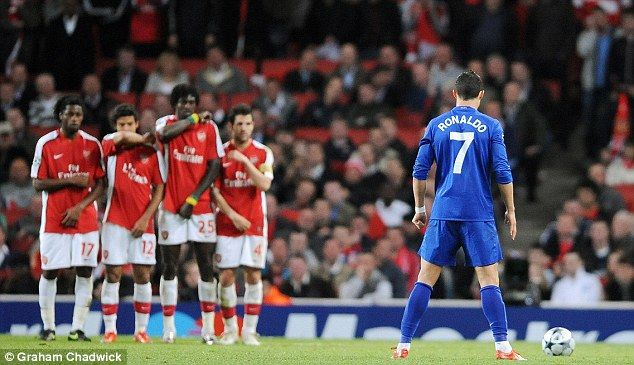

Legendary freekick against Arsenal in the year 2009
Ronaldo's greatest freekicks of all time
- 2018 : Bodacious freekick scored vs Spain in the World Cup
- 2009 : Absolute Knuckleball swerved over the defense wall against Bolton
- 2009 : Legendary freekick against Arsenal in the year 2009
- 2014 : Inventory of Confidence when he slipped past Bayern's defense against Neuer
- 2010 : Playing against the demigods such as Ronaldinho, Beckham, Gattuso, Kaka and bending the ball through them
Click here to know more about his freekicks